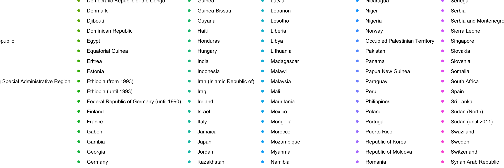

W04 Task - Country Heights
Libraries and Files
Data
Task: Country Heights
Code
row_height <- mean_heights[, colSums(is.na(mean_heights)) < nrow(mean_heights)]
col_height <- mean_heights[rowSums(is.na(mean_heights)) != ncol(mean_heights),]
mean_heights <- mean_heights |>
pivot_longer(c("1810","1820","1830","1840","1850","1860","1870","1880","1890","1900","1910","1920","1930","1940","1950","1960","1970","1980"),
values_to = "height.cm",
names_to = "year_decade")
mean_heights <- mean_heights |> filter(!is.na(height.cm) & !is.na(Code))
mean_heights <- mean_heights |>
rename_at(2, ~"country") |>
select("Code", "country", "height.cm", "year_decade")
mean_heights$height_in <- mean_heights$height.cm / 2.54
mean_heights_cleaned <- mean_heights |>
rename(country = 2) |>
select(Code, country, height.cm, year_decade)
pander(mean_heights_cleaned,
col.names = c("Code", "country", "height_cm", "year_decade"))| Code | country | height_cm | year_decade |
|---|---|---|---|
| 40 | Austria | 163.7 | 1820 |
| 40 | Austria | 163.4 | 1830 |
| 40 | Austria | 164.8 | 1840 |
| 40 | Austria | 165.8 | 1850 |
| 40 | Austria | 166.4 | 1860 |
| 40 | Austria | 167.2 | 1870 |
| 40 | Austria | 167.7 | 1880 |
| 40 | Austria | 168.4 | 1890 |
| 40 | Austria | 168.9 | 1900 |
| 40 | Austria | 168.9 | 1910 |
| 40 | Austria | 170.4 | 1920 |
| 40 | Austria | 177 | 1960 |
| 40 | Austria | 177.5 | 1970 |
| 40 | Austria | 178.8 | 1980 |
| 56 | Belgium | 163.1 | 1810 |
| 56 | Belgium | 163.7 | 1820 |
| 56 | Belgium | 164 | 1830 |
| 56 | Belgium | 165.1 | 1840 |
| 56 | Belgium | 166.1 | 1850 |
| 56 | Belgium | 166.6 | 1860 |
| 56 | Belgium | 166.6 | 1870 |
| 56 | Belgium | 167.8 | 1900 |
| 56 | Belgium | 174.5 | 1940 |
| 56 | Belgium | 176.8 | 1960 |
| 280 | Federal Republic of Germany (until 1990) | 167.8 | 1810 |
| 280 | Federal Republic of Germany (until 1990) | 167.3 | 1820 |
| 280 | Federal Republic of Germany (until 1990) | 166.8 | 1830 |
| 280 | Federal Republic of Germany (until 1990) | 166.6 | 1840 |
| 280 | Federal Republic of Germany (until 1990) | 163.8 | 1850 |
| 280 | Federal Republic of Germany (until 1990) | 165.5 | 1860 |
| 280 | Federal Republic of Germany (until 1990) | 166.9 | 1870 |
| 280 | Federal Republic of Germany (until 1990) | 167.9 | 1880 |
| 280 | Federal Republic of Germany (until 1990) | 168.6 | 1890 |
| 280 | Federal Republic of Germany (until 1990) | 169.2 | 1900 |
| 280 | Federal Republic of Germany (until 1990) | 170.5 | 1910 |
| 280 | Federal Republic of Germany (until 1990) | 173.3 | 1920 |
| 280 | Federal Republic of Germany (until 1990) | 174 | 1930 |
| 280 | Federal Republic of Germany (until 1990) | 175.2 | 1940 |
| 280 | Federal Republic of Germany (until 1990) | 176.8 | 1950 |
| 280 | Federal Republic of Germany (until 1990) | 178.9 | 1960 |
| 280 | Federal Republic of Germany (until 1990) | 179.4 | 1970 |
| 280 | Federal Republic of Germany (until 1990) | 180.5 | 1980 |
| 250 | France | 163.9 | 1810 |
| 250 | France | 163.9 | 1820 |
| 250 | France | 164 | 1830 |
| 250 | France | 164.3 | 1840 |
| 250 | France | 165.2 | 1850 |
| 250 | France | 165.4 | 1860 |
| 250 | France | 165.5 | 1870 |
| 250 | France | 165.9 | 1880 |
| 250 | France | 166.1 | 1890 |
| 250 | France | 166.8 | 1900 |
| 250 | France | 167.8 | 1910 |
| 250 | France | 168.5 | 1920 |
| 250 | France | 169.9 | 1930 |
| 250 | France | 171.7 | 1940 |
| 250 | France | 173.2 | 1950 |
| 250 | France | 174.9 | 1960 |
| 250 | France | 175.1 | 1970 |
| 250 | France | 176.5 | 1980 |
| 276 | Germany | 167.8 | 1810 |
| 276 | Germany | 167.3 | 1820 |
| 276 | Germany | 166.8 | 1830 |
| 276 | Germany | 166.6 | 1840 |
| 276 | Germany | 163.8 | 1850 |
| 276 | Germany | 165.5 | 1860 |
| 276 | Germany | 166.9 | 1870 |
| 276 | Germany | 167.9 | 1880 |
| 276 | Germany | 168.6 | 1890 |
| 276 | Germany | 169.2 | 1900 |
| 276 | Germany | 170.5 | 1910 |
| 276 | Germany | 173.3 | 1920 |
| 276 | Germany | 174 | 1930 |
| 276 | Germany | 175.2 | 1940 |
| 276 | Germany | 176.8 | 1950 |
| 276 | Germany | 178.9 | 1960 |
| 276 | Germany | 179.4 | 1970 |
| 276 | Germany | 180.5 | 1980 |
| 528 | Netherlands | 166 | 1810 |
| 528 | Netherlands | 165.1 | 1820 |
| 528 | Netherlands | 164.2 | 1830 |
| 528 | Netherlands | 164.5 | 1840 |
| 528 | Netherlands | 165.3 | 1850 |
| 528 | Netherlands | 166.5 | 1860 |
| 528 | Netherlands | 167.1 | 1870 |
| 528 | Netherlands | 168.5 | 1880 |
| 528 | Netherlands | 169.4 | 1890 |
| 528 | Netherlands | 170.9 | 1900 |
| 528 | Netherlands | 172.6 | 1910 |
| 528 | Netherlands | 173.5 | 1920 |
| 528 | Netherlands | 174.1 | 1930 |
| 528 | Netherlands | 177.5 | 1940 |
| 528 | Netherlands | 178.7 | 1950 |
| 528 | Netherlands | 182.2 | 1960 |
| 528 | Netherlands | 182.3 | 1970 |
| 528 | Netherlands | 182.7 | 1980 |
| 756 | Switzerland | 167.6 | 1820 |
| 756 | Switzerland | 166.3 | 1830 |
| 756 | Switzerland | 164.7 | 1870 |
| 756 | Switzerland | 166.8 | 1880 |
| 756 | Switzerland | 170.5 | 1890 |
| 756 | Switzerland | 170.5 | 1900 |
| 756 | Switzerland | 171.5 | 1910 |
| 756 | Switzerland | 170.9 | 1920 |
| 756 | Switzerland | 171.3 | 1930 |
| 208 | Denmark | 167 | 1820 |
| 208 | Denmark | 165.4 | 1830 |
| 208 | Denmark | 167.4 | 1850 |
| 208 | Denmark | 168.1 | 1860 |
| 208 | Denmark | 168.1 | 1870 |
| 208 | Denmark | 169.5 | 1880 |
| 208 | Denmark | 169.2 | 1890 |
| 208 | Denmark | 170.5 | 1900 |
| 208 | Denmark | 170 | 1910 |
| 208 | Denmark | 173.5 | 1920 |
| 208 | Denmark | 173.9 | 1930 |
| 208 | Denmark | 175.9 | 1940 |
| 208 | Denmark | 179.8 | 1950 |
| 208 | Denmark | 180.2 | 1960 |
| 208 | Denmark | 180.8 | 1970 |
| 208 | Denmark | 183.2 | 1980 |
| 233 | Estonia | 166.7 | 1840 |
| 233 | Estonia | 167.6 | 1870 |
| 233 | Estonia | 173.4 | 1890 |
| 233 | Estonia | 175.3 | 1900 |
| 233 | Estonia | 172 | 1910 |
| 233 | Estonia | 174.1 | 1960 |
| 233 | Estonia | 179.6 | 1970 |
| 233 | Estonia | 179.1 | 1980 |
| 246 | Finland | 171.9 | 1810 |
| 246 | Finland | 170 | 1820 |
| 246 | Finland | 169.5 | 1830 |
| 246 | Finland | 167.3 | 1860 |
| 246 | Finland | 167.3 | 1900 |
| 246 | Finland | 170.5 | 1910 |
| 246 | Finland | 172.3 | 1920 |
| 246 | Finland | 172.5 | 1930 |
| 246 | Finland | 174.8 | 1940 |
| 246 | Finland | 178 | 1950 |
| 246 | Finland | 179.3 | 1960 |
| 246 | Finland | 177.5 | 1970 |
| 246 | Finland | 178.2 | 1980 |
| 372 | Ireland | 168 | 1810 |
| 372 | Ireland | 165.4 | 1820 |
| 372 | Ireland | 168.1 | 1830 |
| 372 | Ireland | 160.9 | 1840 |
| 372 | Ireland | 168.4 | 1870 |
| 372 | Ireland | 168.7 | 1880 |
| 372 | Ireland | 169.1 | 1890 |
| 372 | Ireland | 170 | 1900 |
| 372 | Ireland | 171.9 | 1920 |
| 372 | Ireland | 173.3 | 1930 |
| 372 | Ireland | 174.9 | 1950 |
| 372 | Ireland | 175.8 | 1960 |
| 372 | Ireland | 176.4 | 1970 |
| 372 | Ireland | 176.6 | 1980 |
| 428 | Latvia | 166.5 | 1840 |
| 428 | Latvia | 170.6 | 1880 |
| 428 | Latvia | 171.7 | 1890 |
| 428 | Latvia | 171.4 | 1900 |
| 428 | Latvia | 174.2 | 1940 |
| 440 | Lithuania | 165.3 | 1840 |
| 440 | Lithuania | 173.7 | 1940 |
| 578 | Norway | 168.6 | 1810 |
| 578 | Norway | 167.5 | 1820 |
| 578 | Norway | 168.9 | 1830 |
| 578 | Norway | 168 | 1840 |
| 578 | Norway | 169.1 | 1850 |
| 578 | Norway | 169.7 | 1860 |
| 578 | Norway | 170.4 | 1870 |
| 578 | Norway | 171.1 | 1880 |
| 578 | Norway | 171.1 | 1890 |
| 578 | Norway | 172 | 1900 |
| 578 | Norway | 173.3 | 1910 |
| 578 | Norway | 176.2 | 1920 |
| 578 | Norway | 176.9 | 1930 |
| 578 | Norway | 177.5 | 1940 |
| 578 | Norway | 178.1 | 1950 |
| 578 | Norway | 179.3 | 1960 |
| 578 | Norway | 179.5 | 1970 |
| 578 | Norway | 179.7 | 1980 |
| 752 | Sweden | 168.1 | 1830 |
| 752 | Sweden | 167.9 | 1840 |
| 752 | Sweden | 168.4 | 1850 |
| 752 | Sweden | 169.3 | 1860 |
| 752 | Sweden | 170.3 | 1870 |
| 752 | Sweden | 171.2 | 1880 |
| 752 | Sweden | 172.4 | 1890 |
| 752 | Sweden | 172.8 | 1900 |
| 752 | Sweden | 173.2 | 1910 |
| 752 | Sweden | 168.3 | 1920 |
| 752 | Sweden | 175.5 | 1930 |
| 752 | Sweden | 178.5 | 1940 |
| 752 | Sweden | 179.3 | 1950 |
| 752 | Sweden | 180.1 | 1960 |
| 752 | Sweden | 180 | 1970 |
| 752 | Sweden | 180.4 | 1980 |
| 826 | United Kingdom of Great Britain and Northern Ireland | 169.7 | 1810 |
| 826 | United Kingdom of Great Britain and Northern Ireland | 169.1 | 1820 |
| 826 | United Kingdom of Great Britain and Northern Ireland | 166.7 | 1830 |
| 826 | United Kingdom of Great Britain and Northern Ireland | 166.5 | 1840 |
| 826 | United Kingdom of Great Britain and Northern Ireland | 165.6 | 1850 |
| 826 | United Kingdom of Great Britain and Northern Ireland | 166.6 | 1860 |
| 826 | United Kingdom of Great Britain and Northern Ireland | 167.2 | 1870 |
| 826 | United Kingdom of Great Britain and Northern Ireland | 168 | 1880 |
| 826 | United Kingdom of Great Britain and Northern Ireland | 167.4 | 1890 |
| 826 | United Kingdom of Great Britain and Northern Ireland | 169.4 | 1900 |
| 826 | United Kingdom of Great Britain and Northern Ireland | 170.9 | 1910 |
| 826 | United Kingdom of Great Britain and Northern Ireland | 171 | 1920 |
| 826 | United Kingdom of Great Britain and Northern Ireland | 173.9 | 1930 |
| 826 | United Kingdom of Great Britain and Northern Ireland | 174.9 | 1940 |
| 826 | United Kingdom of Great Britain and Northern Ireland | 176 | 1950 |
| 826 | United Kingdom of Great Britain and Northern Ireland | 176.9 | 1960 |
| 826 | United Kingdom of Great Britain and Northern Ireland | 177.1 | 1970 |
| 826 | United Kingdom of Great Britain and Northern Ireland | 176.8 | 1980 |
| 8 | Albania | 170.1 | 1880 |
| 8 | Albania | 169.8 | 1890 |
| 8 | Albania | 169.2 | 1900 |
| 191 | Croatia | 163.2 | 1810 |
| 191 | Croatia | 163.6 | 1820 |
| 191 | Croatia | 163.5 | 1830 |
| 191 | Croatia | 161.2 | 1840 |
| 191 | Croatia | 168.1 | 1850 |
| 191 | Croatia | 165.9 | 1860 |
| 191 | Croatia | 166.8 | 1870 |
| 191 | Croatia | 168.9 | 1880 |
| 191 | Croatia | 171.5 | 1900 |
| 191 | Croatia | 176.1 | 1930 |
| 191 | Croatia | 175.1 | 1950 |
| 191 | Croatia | 178.2 | 1960 |
| 300 | Greece | 168.5 | 1870 |
| 300 | Greece | 167.3 | 1880 |
| 300 | Greece | 169.6 | 1900 |
| 300 | Greece | 168.1 | 1910 |
| 300 | Greece | 168.4 | 1920 |
| 300 | Greece | 167.5 | 1930 |
| 300 | Greece | 169.2 | 1940 |
| 300 | Greece | 173.7 | 1950 |
| 300 | Greece | 177.6 | 1960 |
| 300 | Greece | 177.3 | 1980 |
| 380 | Italy | 164.1 | 1810 |
| 380 | Italy | 165.8 | 1820 |
| 380 | Italy | 164.1 | 1830 |
| 380 | Italy | 162 | 1840 |
| 380 | Italy | 162.9 | 1850 |
| 380 | Italy | 163.1 | 1860 |
| 380 | Italy | 163.5 | 1870 |
| 380 | Italy | 163.9 | 1880 |
| 380 | Italy | 164.7 | 1890 |
| 380 | Italy | 165.6 | 1900 |
| 380 | Italy | 166.3 | 1910 |
| 380 | Italy | 167.3 | 1920 |
| 380 | Italy | 168.1 | 1930 |
| 380 | Italy | 169.3 | 1940 |
| 380 | Italy | 171.3 | 1950 |
| 380 | Italy | 173 | 1960 |
| 380 | Italy | 174.1 | 1970 |
| 380 | Italy | 174.5 | 1980 |
| 620 | Portugal | 165.5 | 1810 |
| 620 | Portugal | 166.3 | 1820 |
| 620 | Portugal | 165.3 | 1830 |
| 620 | Portugal | 163.5 | 1840 |
| 620 | Portugal | 164.2 | 1850 |
| 620 | Portugal | 164.1 | 1860 |
| 620 | Portugal | 164.7 | 1870 |
| 620 | Portugal | 164.2 | 1880 |
| 620 | Portugal | 164.2 | 1890 |
| 620 | Portugal | 163.8 | 1900 |
| 620 | Portugal | 164.5 | 1910 |
| 620 | Portugal | 164.9 | 1920 |
| 620 | Portugal | 165.6 | 1930 |
| 620 | Portugal | 166.4 | 1940 |
| 620 | Portugal | 167.4 | 1950 |
| 620 | Portugal | 169.2 | 1960 |
| 620 | Portugal | 171.4 | 1970 |
| 620 | Portugal | 172.1 | 1980 |
| 688 | Serbia | 166.2 | 1850 |
| 688 | Serbia | 169.7 | 1870 |
| 688 | Serbia | 167.1 | 1880 |
| 688 | Serbia | 168.1 | 1890 |
| 688 | Serbia | 175.8 | 1960 |
| 891 | Serbia and Montenegro (until 2006) | 166.2 | 1850 |
| 891 | Serbia and Montenegro (until 2006) | 169.7 | 1870 |
| 891 | Serbia and Montenegro (until 2006) | 167.1 | 1880 |
| 891 | Serbia and Montenegro (until 2006) | 168.1 | 1890 |
| 891 | Serbia and Montenegro (until 2006) | 175.8 | 1960 |
| 705 | Slovenia | 168.3 | 1870 |
| 705 | Slovenia | 173.7 | 1920 |
| 705 | Slovenia | 175.8 | 1950 |
| 705 | Slovenia | 179.2 | 1970 |
| 724 | Spain | 161 | 1830 |
| 724 | Spain | 163.7 | 1840 |
| 724 | Spain | 162.5 | 1850 |
| 724 | Spain | 162.7 | 1860 |
| 724 | Spain | 162.6 | 1870 |
| 724 | Spain | 163.9 | 1880 |
| 724 | Spain | 164 | 1890 |
| 724 | Spain | 164.6 | 1900 |
| 724 | Spain | 165.1 | 1910 |
| 724 | Spain | 165.6 | 1920 |
| 724 | Spain | 165.2 | 1930 |
| 724 | Spain | 166.3 | 1940 |
| 724 | Spain | 170.8 | 1950 |
| 724 | Spain | 174.2 | 1960 |
| 724 | Spain | 175.2 | 1970 |
| 724 | Spain | 175.6 | 1980 |
| 807 | The former Yugoslav Republic of Macedonia | 167.7 | 1900 |
| 807 | The former Yugoslav Republic of Macedonia | 168.4 | 1910 |
| 807 | The former Yugoslav Republic of Macedonia | 169.6 | 1920 |
| 807 | The former Yugoslav Republic of Macedonia | 168.8 | 1930 |
| 112 | Belarus | 163.9 | 1840 |
| 112 | Belarus | 166.5 | 1900 |
| 112 | Belarus | 176.4 | 1980 |
| 100 | Bulgaria | 167.6 | 1880 |
| 100 | Bulgaria | 171.7 | 1930 |
| 100 | Bulgaria | 171.3 | 1940 |
| 100 | Bulgaria | 172.9 | 1950 |
| 203 | Czech Republic | 164 | 1810 |
| 203 | Czech Republic | 163 | 1820 |
| 203 | Czech Republic | 163.5 | 1830 |
| 203 | Czech Republic | 164.8 | 1840 |
| 203 | Czech Republic | 165.5 | 1850 |
| 203 | Czech Republic | 166 | 1860 |
| 203 | Czech Republic | 167 | 1870 |
| 203 | Czech Republic | 167.6 | 1880 |
| 203 | Czech Republic | 169.8 | 1890 |
| 203 | Czech Republic | 170.7 | 1900 |
| 203 | Czech Republic | 170.8 | 1910 |
| 203 | Czech Republic | 173.3 | 1920 |
| 203 | Czech Republic | 175.7 | 1930 |
| 203 | Czech Republic | 176.8 | 1940 |
| 203 | Czech Republic | 177.7 | 1950 |
| 203 | Czech Republic | 178.7 | 1970 |
| 200 | Czechoslovakia (until 1993) | 166.2 | 1850 |
| 200 | Czechoslovakia (until 1993) | 169.7 | 1870 |
| 200 | Czechoslovakia (until 1993) | 167.1 | 1880 |
| 200 | Czechoslovakia (until 1993) | 168.1 | 1890 |
| 200 | Czechoslovakia (until 1993) | 175.8 | 1960 |
| 348 | Hungary | 164.7 | 1810 |
| 348 | Hungary | 164.3 | 1820 |
| 348 | Hungary | 164.1 | 1830 |
| 348 | Hungary | 164 | 1840 |
| 348 | Hungary | 163.7 | 1850 |
| 348 | Hungary | 165.3 | 1860 |
| 348 | Hungary | 166.4 | 1870 |
| 348 | Hungary | 169.1 | 1880 |
| 348 | Hungary | 175.4 | 1950 |
| 348 | Hungary | 178.2 | 1960 |
| 348 | Hungary | 178.8 | 1970 |
| 616 | Poland | 163.1 | 1840 |
| 616 | Poland | 165.5 | 1860 |
| 616 | Poland | 166.3 | 1870 |
| 616 | Poland | 166.8 | 1880 |
| 616 | Poland | 167.2 | 1890 |
| 616 | Poland | 166.6 | 1900 |
| 616 | Poland | 169 | 1910 |
| 616 | Poland | 173 | 1930 |
| 616 | Poland | 170.5 | 1940 |
| 616 | Poland | 173.2 | 1950 |
| 616 | Poland | 175.3 | 1960 |
| 616 | Poland | 177.4 | 1980 |
| 498 | Republic of Moldova | 165.1 | 1840 |
| 498 | Republic of Moldova | 172 | 1950 |
| 498 | Republic of Moldova | 172.8 | 1960 |
| 498 | Republic of Moldova | 173.5 | 1970 |
| 498 | Republic of Moldova | 174.2 | 1980 |
| 642 | Romania | 164 | 1840 |
| 642 | Romania | 163.4 | 1850 |
| 642 | Romania | 164.1 | 1860 |
| 642 | Romania | 165.4 | 1870 |
| 642 | Romania | 164.1 | 1880 |
| 642 | Romania | 168.3 | 1900 |
| 642 | Romania | 169.3 | 1940 |
| 643 | Russian Federation | 159.8 | 1810 |
| 643 | Russian Federation | 162.1 | 1820 |
| 643 | Russian Federation | 163 | 1830 |
| 643 | Russian Federation | 164.2 | 1840 |
| 643 | Russian Federation | 163.4 | 1850 |
| 643 | Russian Federation | 163.3 | 1860 |
| 643 | Russian Federation | 165.8 | 1870 |
| 643 | Russian Federation | 166.6 | 1880 |
| 643 | Russian Federation | 168.3 | 1890 |
| 643 | Russian Federation | 169.2 | 1900 |
| 643 | Russian Federation | 169.1 | 1910 |
| 643 | Russian Federation | 167 | 1920 |
| 643 | Russian Federation | 167.9 | 1930 |
| 643 | Russian Federation | 169 | 1940 |
| 643 | Russian Federation | 172 | 1950 |
| 643 | Russian Federation | 173.6 | 1960 |
| 643 | Russian Federation | 177 | 1970 |
| 643 | Russian Federation | 177 | 1980 |
| 703 | Slovakia | 164.1 | 1850 |
| 703 | Slovakia | 163.5 | 1860 |
| 703 | Slovakia | 165.1 | 1870 |
| 703 | Slovakia | 165.8 | 1880 |
| 703 | Slovakia | 171.7 | 1920 |
| 703 | Slovakia | 173.3 | 1930 |
| 703 | Slovakia | 172.8 | 1940 |
| 804 | Ukraine | 164.1 | 1820 |
| 804 | Ukraine | 164.8 | 1830 |
| 804 | Ukraine | 164.1 | 1840 |
| 804 | Ukraine | 163.1 | 1850 |
| 804 | Ukraine | 164.6 | 1870 |
| 804 | Ukraine | 165.4 | 1880 |
| 124 | Canada | 171.5 | 1810 |
| 124 | Canada | 171.5 | 1820 |
| 124 | Canada | 171.5 | 1830 |
| 124 | Canada | 170.4 | 1840 |
| 124 | Canada | 172.5 | 1850 |
| 124 | Canada | 172 | 1860 |
| 124 | Canada | 171.2 | 1870 |
| 124 | Canada | 171.2 | 1880 |
| 124 | Canada | 170.7 | 1890 |
| 124 | Canada | 169.9 | 1900 |
| 124 | Canada | 171.5 | 1910 |
| 124 | Canada | 173 | 1920 |
| 124 | Canada | 172.7 | 1930 |
| 124 | Canada | 174.6 | 1940 |
| 124 | Canada | 177 | 1950 |
| 124 | Canada | 178.3 | 1960 |
| 124 | Canada | 178.8 | 1970 |
| 124 | Canada | 179.6 | 1980 |
| 840 | United States of America | 172.2 | 1820 |
| 840 | United States of America | 173.5 | 1830 |
| 840 | United States of America | 172.2 | 1840 |
| 840 | United States of America | 171.1 | 1850 |
| 840 | United States of America | 170.6 | 1860 |
| 840 | United States of America | 171.1 | 1870 |
| 840 | United States of America | 169.5 | 1880 |
| 840 | United States of America | 169.1 | 1890 |
| 840 | United States of America | 170 | 1900 |
| 840 | United States of America | 172.1 | 1910 |
| 840 | United States of America | 173.1 | 1920 |
| 840 | United States of America | 173.4 | 1930 |
| 840 | United States of America | 176.1 | 1940 |
| 840 | United States of America | 177.1 | 1950 |
| 840 | United States of America | 177.3 | 1960 |
| 840 | United States of America | 178.3 | 1970 |
| 840 | United States of America | 179 | 1980 |
| 192 | Cuba | 167.1 | 1870 |
| 192 | Cuba | 166.8 | 1880 |
| 192 | Cuba | 166 | 1890 |
| 192 | Cuba | 166.1 | 1900 |
| 192 | Cuba | 167.9 | 1910 |
| 192 | Cuba | 169.4 | 1940 |
| 192 | Cuba | 169.2 | 1950 |
| 214 | Dominican Republic | 167.4 | 1940 |
| 214 | Dominican Republic | 168.1 | 1950 |
| 214 | Dominican Republic | 169 | 1960 |
| 214 | Dominican Republic | 168.8 | 1970 |
| 332 | Haiti | 166.9 | 1920 |
| 332 | Haiti | 166.7 | 1930 |
| 332 | Haiti | 170.4 | 1950 |
| 332 | Haiti | 171.1 | 1960 |
| 332 | Haiti | 171.3 | 1970 |
| 332 | Haiti | 171.5 | 1980 |
| 388 | Jamaica | 170.2 | 1890 |
| 388 | Jamaica | 167.1 | 1910 |
| 388 | Jamaica | 167.9 | 1920 |
| 388 | Jamaica | 169.7 | 1930 |
| 388 | Jamaica | 168.3 | 1940 |
| 388 | Jamaica | 173.6 | 1980 |
| 630 | Puerto Rico | 164.5 | 1890 |
| 630 | Puerto Rico | 164 | 1900 |
| 630 | Puerto Rico | 165.3 | 1910 |
| 630 | Puerto Rico | 164 | 1920 |
| 630 | Puerto Rico | 163.7 | 1930 |
| 780 | Trinidad and Tobago | 174.4 | 1980 |
| 188 | Costa Rica | 166.1 | 1940 |
| 188 | Costa Rica | 173.6 | 1980 |
| 320 | Guatemala | 156.3 | 1890 |
| 320 | Guatemala | 156 | 1910 |
| 320 | Guatemala | 158.7 | 1920 |
| 320 | Guatemala | 158.7 | 1930 |
| 320 | Guatemala | 159.2 | 1950 |
| 320 | Guatemala | 159.8 | 1960 |
| 320 | Guatemala | 160.3 | 1970 |
| 320 | Guatemala | 160.8 | 1980 |
| 340 | Honduras | 164 | 1950 |
| 340 | Honduras | 164.2 | 1960 |
| 340 | Honduras | 164.6 | 1970 |
| 340 | Honduras | 164.7 | 1980 |
| 484 | Mexico | 161.3 | 1810 |
| 484 | Mexico | 160.4 | 1820 |
| 484 | Mexico | 160.4 | 1830 |
| 484 | Mexico | 162.5 | 1840 |
| 484 | Mexico | 163.4 | 1850 |
| 484 | Mexico | 162.9 | 1860 |
| 484 | Mexico | 163.7 | 1870 |
| 484 | Mexico | 163.9 | 1880 |
| 484 | Mexico | 163.9 | 1890 |
| 484 | Mexico | 163.9 | 1900 |
| 484 | Mexico | 163.7 | 1910 |
| 484 | Mexico | 161.1 | 1920 |
| 484 | Mexico | 165.5 | 1930 |
| 484 | Mexico | 165.8 | 1940 |
| 484 | Mexico | 165.1 | 1950 |
| 484 | Mexico | 166.4 | 1960 |
| 484 | Mexico | 167.8 | 1980 |
| 558 | Nicaragua | 165.6 | 1950 |
| 558 | Nicaragua | 165.9 | 1960 |
| 558 | Nicaragua | 166.2 | 1970 |
| 558 | Nicaragua | 166.4 | 1980 |
| 591 | Panama | 170 | 1980 |
| 32 | Argentina | 168.8 | 1810 |
| 32 | Argentina | 169.9 | 1820 |
| 32 | Argentina | 170.9 | 1830 |
| 32 | Argentina | 169.6 | 1840 |
| 32 | Argentina | 168.2 | 1850 |
| 32 | Argentina | 167.4 | 1860 |
| 32 | Argentina | 167.6 | 1870 |
| 32 | Argentina | 167.6 | 1880 |
| 32 | Argentina | 167.8 | 1890 |
| 32 | Argentina | 167.9 | 1900 |
| 32 | Argentina | 168.2 | 1910 |
| 32 | Argentina | 169 | 1920 |
| 32 | Argentina | 169.8 | 1930 |
| 32 | Argentina | 170.6 | 1940 |
| 32 | Argentina | 170.8 | 1950 |
| 68 | Bolivia (Plurinational State of) | 163.6 | 1890 |
| 68 | Bolivia (Plurinational State of) | 162.4 | 1900 |
| 68 | Bolivia (Plurinational State of) | 162.5 | 1930 |
| 68 | Bolivia (Plurinational State of) | 163.4 | 1940 |
| 68 | Bolivia (Plurinational State of) | 162.5 | 1950 |
| 68 | Bolivia (Plurinational State of) | 163.2 | 1960 |
| 68 | Bolivia (Plurinational State of) | 163.9 | 1970 |
| 68 | Bolivia (Plurinational State of) | 164.2 | 1980 |
| 76 | Brazil | 164.3 | 1810 |
| 76 | Brazil | 164.3 | 1820 |
| 76 | Brazil | 164.8 | 1830 |
| 76 | Brazil | 164.6 | 1840 |
| 76 | Brazil | 164.5 | 1850 |
| 76 | Brazil | 165 | 1860 |
| 76 | Brazil | 166.5 | 1870 |
| 76 | Brazil | 166.1 | 1880 |
| 76 | Brazil | 167.1 | 1890 |
| 76 | Brazil | 167.5 | 1900 |
| 76 | Brazil | 166.5 | 1910 |
| 76 | Brazil | 166.6 | 1920 |
| 76 | Brazil | 167 | 1930 |
| 76 | Brazil | 167.1 | 1940 |
| 76 | Brazil | 168.2 | 1950 |
| 76 | Brazil | 169 | 1960 |
| 76 | Brazil | 171.6 | 1970 |
| 76 | Brazil | 171.7 | 1980 |
| 152 | Chile | 169.6 | 1950 |
| 152 | Chile | 173.1 | 1980 |
| 170 | Colombia | 161.1 | 1870 |
| 170 | Colombia | 162.1 | 1880 |
| 170 | Colombia | 161.9 | 1890 |
| 170 | Colombia | 161.8 | 1900 |
| 170 | Colombia | 163.5 | 1910 |
| 170 | Colombia | 164.7 | 1920 |
| 170 | Colombia | 165.5 | 1930 |
| 170 | Colombia | 167 | 1940 |
| 170 | Colombia | 167.8 | 1950 |
| 170 | Colombia | 168.5 | 1960 |
| 170 | Colombia | 168.9 | 1970 |
| 170 | Colombia | 170.6 | 1980 |
| 328 | Guyana | 159.2 | 1880 |
| 328 | Guyana | 157.4 | 1890 |
| 328 | Guyana | 156.8 | 1900 |
| 328 | Guyana | 167.2 | 1970 |
| 328 | Guyana | 170.5 | 1980 |
| 600 | Paraguay | 165.6 | 1900 |
| 600 | Paraguay | 165.4 | 1930 |
| 604 | Peru | 163.4 | 1810 |
| 604 | Peru | 162.6 | 1820 |
| 604 | Peru | 162.5 | 1830 |
| 604 | Peru | 161.3 | 1840 |
| 604 | Peru | 161.8 | 1850 |
| 604 | Peru | 161.7 | 1860 |
| 604 | Peru | 161.3 | 1870 |
| 604 | Peru | 161.5 | 1880 |
| 604 | Peru | 159.7 | 1930 |
| 604 | Peru | 160.9 | 1940 |
| 604 | Peru | 162.2 | 1950 |
| 604 | Peru | 163.1 | 1960 |
| 604 | Peru | 163.9 | 1970 |
| 604 | Peru | 164.2 | 1980 |
| 858 | Uruguay | 165 | 1880 |
| 858 | Uruguay | 168.1 | 1930 |
| 53 | Australia and New Zealand | 170 | 1850 |
| 53 | Australia and New Zealand | 170.6 | 1860 |
| 53 | Australia and New Zealand | 170.1 | 1870 |
| 53 | Australia and New Zealand | 171.1 | 1880 |
| 53 | Australia and New Zealand | 171.3 | 1890 |
| 53 | Australia and New Zealand | 172.3 | 1900 |
| 53 | Australia and New Zealand | 172.7 | 1910 |
| 53 | Australia and New Zealand | 172.8 | 1920 |
| 53 | Australia and New Zealand | 176.3 | 1960 |
| 53 | Australia and New Zealand | 178.4 | 1970 |
| 36 | Australia | 170 | 1850 |
| 36 | Australia | 170.6 | 1860 |
| 36 | Australia | 170.1 | 1870 |
| 36 | Australia | 171.1 | 1880 |
| 36 | Australia | 171.3 | 1890 |
| 36 | Australia | 172.3 | 1900 |
| 36 | Australia | 172.7 | 1910 |
| 36 | Australia | 172.8 | 1920 |
| 36 | Australia | 176.3 | 1960 |
| 36 | Australia | 178.4 | 1970 |
| 554 | New Zealand | 172.4 | 1860 |
| 554 | New Zealand | 172.4 | 1870 |
| 554 | New Zealand | 172.7 | 1880 |
| 554 | New Zealand | 172 | 1890 |
| 554 | New Zealand | 174.6 | 1930 |
| 598 | Papua New Guinea | 152.4 | 1880 |
| 598 | Papua New Guinea | 155.6 | 1920 |
| 598 | Papua New Guinea | 152.4 | 1930 |
| 598 | Papua New Guinea | 158.9 | 1940 |
| 598 | Papua New Guinea | 160.9 | 1980 |
| 4 | Afghanistan | 168.4 | 1870 |
| 4 | Afghanistan | 165.7 | 1880 |
| 4 | Afghanistan | 166.8 | 1930 |
| 50 | Bangladesh | 161.8 | 1850 |
| 50 | Bangladesh | 162.3 | 1860 |
| 50 | Bangladesh | 163.7 | 1870 |
| 50 | Bangladesh | 162.1 | 1880 |
| 50 | Bangladesh | 161.6 | 1950 |
| 50 | Bangladesh | 162.2 | 1960 |
| 50 | Bangladesh | 162.4 | 1980 |
| 356 | India | 160.3 | 1840 |
| 356 | India | 161.8 | 1850 |
| 356 | India | 163 | 1860 |
| 356 | India | 163.8 | 1870 |
| 356 | India | 162.4 | 1880 |
| 356 | India | 163 | 1890 |
| 356 | India | 162.9 | 1910 |
| 356 | India | 163.5 | 1920 |
| 356 | India | 163.7 | 1930 |
| 356 | India | 164 | 1940 |
| 356 | India | 163.5 | 1950 |
| 356 | India | 163.9 | 1960 |
| 356 | India | 164.3 | 1970 |
| 356 | India | 164.4 | 1980 |
| 364 | Iran (Islamic Republic of) | 165.3 | 1850 |
| 364 | Iran (Islamic Republic of) | 168.3 | 1870 |
| 364 | Iran (Islamic Republic of) | 165.2 | 1880 |
| 364 | Iran (Islamic Republic of) | 166 | 1890 |
| 364 | Iran (Islamic Republic of) | 167.5 | 1900 |
| 364 | Iran (Islamic Republic of) | 167.2 | 1910 |
| 364 | Iran (Islamic Republic of) | 167.8 | 1940 |
| 364 | Iran (Islamic Republic of) | 168.8 | 1950 |
| 364 | Iran (Islamic Republic of) | 169.1 | 1960 |
| 364 | Iran (Islamic Republic of) | 170.8 | 1970 |
| 364 | Iran (Islamic Republic of) | 172.4 | 1980 |
| 524 | Nepal | 162.4 | 1880 |
| 524 | Nepal | 161.7 | 1900 |
| 524 | Nepal | 160.9 | 1930 |
| 524 | Nepal | 162.4 | 1940 |
| 524 | Nepal | 161.8 | 1950 |
| 524 | Nepal | 162.5 | 1960 |
| 524 | Nepal | 162.7 | 1970 |
| 524 | Nepal | 163 | 1980 |
| 586 | Pakistan | 165.1 | 1840 |
| 586 | Pakistan | 162 | 1850 |
| 586 | Pakistan | 164.6 | 1860 |
| 586 | Pakistan | 165.2 | 1870 |
| 586 | Pakistan | 165 | 1890 |
| 586 | Pakistan | 167.9 | 1920 |
| 586 | Pakistan | 164 | 1930 |
| 586 | Pakistan | 168.1 | 1940 |
| 144 | Sri Lanka | 162.5 | 1870 |
| 144 | Sri Lanka | 163.9 | 1920 |
| 144 | Sri Lanka | 165.8 | 1980 |
| 156 | China | 165.7 | 1810 |
| 156 | China | 165.8 | 1820 |
| 156 | China | 165.8 | 1830 |
| 156 | China | 166.2 | 1840 |
| 156 | China | 166.2 | 1850 |
| 156 | China | 165.7 | 1860 |
| 156 | China | 165.8 | 1870 |
| 156 | China | 165.3 | 1880 |
| 156 | China | 164 | 1890 |
| 156 | China | 164 | 1900 |
| 156 | China | 164.7 | 1910 |
| 156 | China | 164.2 | 1920 |
| 156 | China | 166.5 | 1930 |
| 156 | China | 167.4 | 1940 |
| 156 | China | 169.2 | 1950 |
| 156 | China | 170 | 1960 |
| 156 | China | 170 | 1970 |
| 156 | China | 171.5 | 1980 |
| 344 | China, Hong Kong Special Administrative Region | 167.7 | 1930 |
| 344 | China, Hong Kong Special Administrative Region | 167.1 | 1940 |
| 408 | Democratic People’s Republic of Korea | 163.4 | 1870 |
| 408 | Democratic People’s Republic of Korea | 160.1 | 1880 |
| 408 | Democratic People’s Republic of Korea | 160.7 | 1890 |
| 408 | Democratic People’s Republic of Korea | 160.1 | 1900 |
| 408 | Democratic People’s Republic of Korea | 166.5 | 1940 |
| 408 | Democratic People’s Republic of Korea | 168.6 | 1950 |
| 408 | Democratic People’s Republic of Korea | 170.7 | 1960 |
| 408 | Democratic People’s Republic of Korea | 171.9 | 1970 |
| 408 | Democratic People’s Republic of Korea | 173.8 | 1980 |
| 392 | Japan | 157.8 | 1880 |
| 392 | Japan | 157.8 | 1890 |
| 392 | Japan | 158.7 | 1900 |
| 392 | Japan | 159.6 | 1910 |
| 392 | Japan | 160.7 | 1920 |
| 392 | Japan | 161.4 | 1930 |
| 392 | Japan | 162.6 | 1940 |
| 392 | Japan | 163.6 | 1950 |
| 392 | Japan | 165.7 | 1960 |
| 392 | Japan | 166.8 | 1970 |
| 392 | Japan | 171.7 | 1980 |
| 496 | Mongolia | 162.6 | 1910 |
| 496 | Mongolia | 164.8 | 1930 |
| 410 | Republic of Korea | 163.4 | 1870 |
| 410 | Republic of Korea | 160.1 | 1880 |
| 410 | Republic of Korea | 160.7 | 1890 |
| 410 | Republic of Korea | 160.1 | 1900 |
| 410 | Republic of Korea | 166.5 | 1940 |
| 410 | Republic of Korea | 168.6 | 1950 |
| 410 | Republic of Korea | 170.7 | 1960 |
| 410 | Republic of Korea | 171.9 | 1970 |
| 410 | Republic of Korea | 173.8 | 1980 |
| 116 | Cambodia | 161.6 | 1840 |
| 116 | Cambodia | 163.2 | 1850 |
| 116 | Cambodia | 164.9 | 1860 |
| 116 | Cambodia | 159 | 1870 |
| 116 | Cambodia | 161.7 | 1880 |
| 116 | Cambodia | 160.4 | 1890 |
| 116 | Cambodia | 158.3 | 1900 |
| 116 | Cambodia | 160.6 | 1910 |
| 116 | Cambodia | 158.5 | 1920 |
| 116 | Cambodia | 158.4 | 1930 |
| 116 | Cambodia | 162.4 | 1950 |
| 116 | Cambodia | 162.8 | 1960 |
| 116 | Cambodia | 162.7 | 1970 |
| 116 | Cambodia | 162.5 | 1980 |
| 360 | Indonesia | 161.3 | 1810 |
| 360 | Indonesia | 160.4 | 1840 |
| 360 | Indonesia | 160.6 | 1850 |
| 360 | Indonesia | 160.4 | 1860 |
| 360 | Indonesia | 158.1 | 1870 |
| 360 | Indonesia | 158.6 | 1880 |
| 360 | Indonesia | 158.8 | 1890 |
| 360 | Indonesia | 159 | 1900 |
| 360 | Indonesia | 159.6 | 1910 |
| 360 | Indonesia | 160.9 | 1920 |
| 360 | Indonesia | 160.7 | 1930 |
| 360 | Indonesia | 160.4 | 1940 |
| 360 | Indonesia | 161.7 | 1950 |
| 360 | Indonesia | 162.4 | 1960 |
| 360 | Indonesia | 163.1 | 1970 |
| 360 | Indonesia | 164 | 1980 |
| 418 | Lao People’s Democratic Republic | 159.6 | 1840 |
| 418 | Lao People’s Democratic Republic | 160 | 1850 |
| 418 | Lao People’s Democratic Republic | 159 | 1860 |
| 418 | Lao People’s Democratic Republic | 159.1 | 1870 |
| 418 | Lao People’s Democratic Republic | 160.6 | 1890 |
| 418 | Lao People’s Democratic Republic | 161.5 | 1900 |
| 418 | Lao People’s Democratic Republic | 156.2 | 1910 |
| 418 | Lao People’s Democratic Republic | 159.7 | 1920 |
| 418 | Lao People’s Democratic Republic | 160.2 | 1930 |
| 418 | Lao People’s Democratic Republic | 163.2 | 1940 |
| 418 | Lao People’s Democratic Republic | 165.2 | 1980 |
| 458 | Malaysia | 159.3 | 1840 |
| 458 | Malaysia | 161 | 1860 |
| 458 | Malaysia | 157.2 | 1870 |
| 458 | Malaysia | 155.8 | 1890 |
| 458 | Malaysia | 160.5 | 1900 |
| 458 | Malaysia | 162.5 | 1930 |
| 104 | Myanmar | 161.1 | 1850 |
| 104 | Myanmar | 164 | 1860 |
| 104 | Myanmar | 161.3 | 1870 |
| 104 | Myanmar | 160.7 | 1880 |
| 104 | Myanmar | 163 | 1890 |
| 104 | Myanmar | 163.7 | 1900 |
| 104 | Myanmar | 160.1 | 1920 |
| 104 | Myanmar | 164.8 | 1940 |
| 104 | Myanmar | 161.3 | 1980 |
| 608 | Philippines | 155 | 1860 |
| 608 | Philippines | 159.5 | 1870 |
| 608 | Philippines | 158.9 | 1880 |
| 608 | Philippines | 161.5 | 1890 |
| 608 | Philippines | 160.4 | 1900 |
| 608 | Philippines | 163.4 | 1930 |
| 608 | Philippines | 164.6 | 1940 |
| 608 | Philippines | 165.6 | 1980 |
| 702 | Singapore | 172.2 | 1970 |
| 764 | Thailand | 160.1 | 1860 |
| 764 | Thailand | 161.5 | 1870 |
| 764 | Thailand | 162.3 | 1880 |
| 764 | Thailand | 161 | 1890 |
| 764 | Thailand | 162.1 | 1900 |
| 764 | Thailand | 161.5 | 1910 |
| 764 | Thailand | 161.3 | 1920 |
| 764 | Thailand | 161.2 | 1930 |
| 704 | Viet Nam | 157.9 | 1830 |
| 704 | Viet Nam | 157.5 | 1840 |
| 704 | Viet Nam | 158.4 | 1850 |
| 704 | Viet Nam | 158.3 | 1860 |
| 704 | Viet Nam | 158.3 | 1870 |
| 704 | Viet Nam | 157.7 | 1880 |
| 704 | Viet Nam | 158.5 | 1890 |
| 704 | Viet Nam | 161.2 | 1900 |
| 704 | Viet Nam | 158 | 1910 |
| 704 | Viet Nam | 157.5 | 1920 |
| 704 | Viet Nam | 158.4 | 1930 |
| 704 | Viet Nam | 160 | 1980 |
| 51 | Armenia | 169.3 | 1850 |
| 51 | Armenia | 167.6 | 1860 |
| 51 | Armenia | 166.2 | 1890 |
| 51 | Armenia | 163.6 | 1900 |
| 51 | Armenia | 163.8 | 1910 |
| 51 | Armenia | 168 | 1940 |
| 51 | Armenia | 170.6 | 1960 |
| 51 | Armenia | 171.7 | 1970 |
| 51 | Armenia | 171.7 | 1980 |
| 31 | Azerbaijan | 170.2 | 1850 |
| 31 | Azerbaijan | 170.8 | 1860 |
| 31 | Azerbaijan | 171.2 | 1950 |
| 31 | Azerbaijan | 171.7 | 1960 |
| 31 | Azerbaijan | 172 | 1970 |
| 31 | Azerbaijan | 172.2 | 1980 |
| 48 | Bahrain | 160.7 | 1930 |
| 48 | Bahrain | 163.8 | 1940 |
| 48 | Bahrain | 164 | 1950 |
| 196 | Cyprus | 168.8 | 1860 |
| 196 | Cyprus | 169.8 | 1870 |
| 196 | Cyprus | 169.1 | 1880 |
| 196 | Cyprus | 168.3 | 1890 |
| 268 | Georgia | 165.5 | 1840 |
| 268 | Georgia | 163 | 1860 |
| 268 | Georgia | 164.3 | 1890 |
| 368 | Iraq | 168.4 | 1880 |
| 368 | Iraq | 166.6 | 1890 |
| 368 | Iraq | 168.6 | 1900 |
| 368 | Iraq | 166.2 | 1910 |
| 376 | Israel | 169.1 | 1850 |
| 376 | Israel | 168.8 | 1860 |
| 376 | Israel | 167.5 | 1930 |
| 376 | Israel | 165.7 | 1940 |
| 400 | Jordan | 166.1 | 1940 |
| 400 | Jordan | 170 | 1950 |
| 400 | Jordan | 170.3 | 1960 |
| 400 | Jordan | 170.5 | 1970 |
| 400 | Jordan | 170.3 | 1980 |
| 422 | Lebanon | 166.4 | 1850 |
| 422 | Lebanon | 167.2 | 1860 |
| 422 | Lebanon | 166.4 | 1890 |
| 422 | Lebanon | 167.3 | 1900 |
| 422 | Lebanon | 169.4 | 1940 |
| 275 | Occupied Palestinian Territory | 171 | 1950 |
| 275 | Occupied Palestinian Territory | 172 | 1960 |
| 275 | Occupied Palestinian Territory | 172.5 | 1970 |
| 682 | Saudi Arabia | 169.2 | 1940 |
| 682 | Saudi Arabia | 170.3 | 1950 |
| 682 | Saudi Arabia | 170.8 | 1960 |
| 682 | Saudi Arabia | 172.3 | 1970 |
| 760 | Syrian Arab Republic | 166.3 | 1850 |
| 760 | Syrian Arab Republic | 168 | 1860 |
| 760 | Syrian Arab Republic | 162.2 | 1880 |
| 760 | Syrian Arab Republic | 166.9 | 1890 |
| 760 | Syrian Arab Republic | 167.3 | 1900 |
| 792 | Turkey | 168.7 | 1850 |
| 792 | Turkey | 169.1 | 1860 |
| 792 | Turkey | 170.1 | 1870 |
| 792 | Turkey | 167.4 | 1880 |
| 792 | Turkey | 168.4 | 1890 |
| 792 | Turkey | 168.4 | 1900 |
| 792 | Turkey | 168 | 1910 |
| 792 | Turkey | 169.3 | 1920 |
| 792 | Turkey | 169.3 | 1930 |
| 792 | Turkey | 167.2 | 1940 |
| 792 | Turkey | 166.6 | 1950 |
| 792 | Turkey | 167.4 | 1960 |
| 792 | Turkey | 168.6 | 1970 |
| 784 | United Arab Emirates | 169 | 1980 |
| 886 | Yemen (until 1990) | 162.3 | 1850 |
| 886 | Yemen (until 1990) | 161.1 | 1860 |
| 886 | Yemen (until 1990) | 160.8 | 1880 |
| 886 | Yemen (until 1990) | 162.7 | 1890 |
| 886 | Yemen (until 1990) | 162 | 1900 |
| 886 | Yemen (until 1990) | 167.6 | 1980 |
| 887 | Yemen | 162.3 | 1850 |
| 887 | Yemen | 161.1 | 1860 |
| 887 | Yemen | 160.8 | 1880 |
| 887 | Yemen | 162.7 | 1890 |
| 887 | Yemen | 162 | 1900 |
| 887 | Yemen | 167.6 | 1980 |
| 398 | Kazakhstan | 165.3 | 1840 |
| 398 | Kazakhstan | 164.6 | 1850 |
| 398 | Kazakhstan | 163.4 | 1870 |
| 398 | Kazakhstan | 164.8 | 1890 |
| 398 | Kazakhstan | 165 | 1900 |
| 398 | Kazakhstan | 163.4 | 1910 |
| 398 | Kazakhstan | 166 | 1920 |
| 398 | Kazakhstan | 164.4 | 1930 |
| 398 | Kazakhstan | 170.3 | 1950 |
| 398 | Kazakhstan | 171.4 | 1960 |
| 398 | Kazakhstan | 171.3 | 1970 |
| 417 | Kyrgyzstan | 165.3 | 1880 |
| 417 | Kyrgyzstan | 164 | 1890 |
| 417 | Kyrgyzstan | 165.1 | 1900 |
| 417 | Kyrgyzstan | 165.1 | 1910 |
| 417 | Kyrgyzstan | 166.2 | 1920 |
| 417 | Kyrgyzstan | 164.5 | 1930 |
| 417 | Kyrgyzstan | 169.8 | 1950 |
| 417 | Kyrgyzstan | 169.8 | 1960 |
| 417 | Kyrgyzstan | 170.6 | 1970 |
| 762 | Tajikistan | 165 | 1860 |
| 762 | Tajikistan | 164.8 | 1870 |
| 762 | Tajikistan | 166.6 | 1880 |
| 762 | Tajikistan | 165.8 | 1890 |
| 762 | Tajikistan | 165.1 | 1900 |
| 762 | Tajikistan | 165.1 | 1910 |
| 795 | Turkmenistan | 168.9 | 1890 |
| 795 | Turkmenistan | 167.9 | 1910 |
| 795 | Turkmenistan | 167.5 | 1920 |
| 860 | Uzbekistan | 165.2 | 1890 |
| 860 | Uzbekistan | 165.5 | 1900 |
| 860 | Uzbekistan | 166 | 1910 |
| 860 | Uzbekistan | 165 | 1920 |
| 860 | Uzbekistan | 170.3 | 1940 |
| 860 | Uzbekistan | 171.5 | 1950 |
| 860 | Uzbekistan | 171.2 | 1960 |
| 860 | Uzbekistan | 172 | 1970 |
| 12 | Algeria | 168.8 | 1910 |
| 12 | Algeria | 166.2 | 1920 |
| 12 | Algeria | 169 | 1930 |
| 818 | Egypt | 166.3 | 1850 |
| 818 | Egypt | 167.7 | 1860 |
| 818 | Egypt | 166.9 | 1870 |
| 818 | Egypt | 163 | 1880 |
| 818 | Egypt | 166.2 | 1900 |
| 818 | Egypt | 166.2 | 1910 |
| 818 | Egypt | 165.1 | 1920 |
| 818 | Egypt | 167.5 | 1940 |
| 818 | Egypt | 170.1 | 1950 |
| 818 | Egypt | 170.6 | 1960 |
| 818 | Egypt | 171.2 | 1970 |
| 818 | Egypt | 171.3 | 1980 |
| 434 | Libya | 166.5 | 1890 |
| 434 | Libya | 165.1 | 1920 |
| 504 | Morocco | 168.6 | 1880 |
| 504 | Morocco | 168.1 | 1940 |
| 504 | Morocco | 169 | 1950 |
| 504 | Morocco | 169.9 | 1960 |
| 504 | Morocco | 170.2 | 1970 |
| 504 | Morocco | 170.3 | 1980 |
| 729 | Sudan (North) | 168 | 1870 |
| 729 | Sudan (North) | 169.9 | 1880 |
| 729 | Sudan (North) | 169.8 | 1890 |
| 729 | Sudan (North) | 167.9 | 1900 |
| 729 | Sudan (North) | 169 | 1910 |
| 729 | Sudan (North) | 171 | 1920 |
| 729 | Sudan (North) | 167.9 | 1930 |
| 736 | Sudan (until 2011) | 168 | 1870 |
| 736 | Sudan (until 2011) | 169.9 | 1880 |
| 736 | Sudan (until 2011) | 169.8 | 1890 |
| 736 | Sudan (until 2011) | 167.9 | 1900 |
| 736 | Sudan (until 2011) | 169 | 1910 |
| 736 | Sudan (until 2011) | 171 | 1920 |
| 736 | Sudan (until 2011) | 167.9 | 1930 |
| 788 | Tunisia | 162.9 | 1910 |
| 788 | Tunisia | 165.3 | 1970 |
| 204 | Benin | 164.9 | 1810 |
| 204 | Benin | 168.9 | 1910 |
| 204 | Benin | 168.1 | 1920 |
| 204 | Benin | 168.2 | 1930 |
| 204 | Benin | 169.9 | 1950 |
| 204 | Benin | 170.7 | 1960 |
| 204 | Benin | 170.3 | 1970 |
| 204 | Benin | 169.2 | 1980 |
| 854 | Burkina Faso | 166.3 | 1810 |
| 854 | Burkina Faso | 165.4 | 1820 |
| 854 | Burkina Faso | 166.7 | 1830 |
| 854 | Burkina Faso | 162.6 | 1840 |
| 854 | Burkina Faso | 171.2 | 1870 |
| 854 | Burkina Faso | 171.5 | 1880 |
| 854 | Burkina Faso | 167.9 | 1890 |
| 854 | Burkina Faso | 171.2 | 1900 |
| 854 | Burkina Faso | 171.1 | 1910 |
| 854 | Burkina Faso | 172.4 | 1920 |
| 854 | Burkina Faso | 171 | 1930 |
| 854 | Burkina Faso | 172.5 | 1940 |
| 854 | Burkina Faso | 172.2 | 1950 |
| 854 | Burkina Faso | 172.8 | 1960 |
| 854 | Burkina Faso | 172.8 | 1970 |
| 854 | Burkina Faso | 172.8 | 1980 |
| 132 | Cape Verde | 169 | 1980 |
| 384 | Cote d’Ivoire | 165.1 | 1810 |
| 384 | Cote d’Ivoire | 170.5 | 1850 |
| 384 | Cote d’Ivoire | 169.8 | 1870 |
| 384 | Cote d’Ivoire | 168.8 | 1890 |
| 384 | Cote d’Ivoire | 167.9 | 1900 |
| 384 | Cote d’Ivoire | 166.6 | 1910 |
| 384 | Cote d’Ivoire | 166.7 | 1920 |
| 384 | Cote d’Ivoire | 167.5 | 1930 |
| 384 | Cote d’Ivoire | 168.7 | 1940 |
| 384 | Cote d’Ivoire | 170 | 1950 |
| 384 | Cote d’Ivoire | 171.3 | 1960 |
| 384 | Cote d’Ivoire | 171.2 | 1970 |
| 384 | Cote d’Ivoire | 171 | 1980 |
| 270 | Gambia | 166.6 | 1920 |
| 288 | Ghana | 164.1 | 1810 |
| 288 | Ghana | 167.8 | 1860 |
| 288 | Ghana | 167.8 | 1880 |
| 288 | Ghana | 164.2 | 1890 |
| 288 | Ghana | 165.9 | 1900 |
| 288 | Ghana | 167.1 | 1910 |
| 288 | Ghana | 167.1 | 1920 |
| 288 | Ghana | 167.7 | 1930 |
| 288 | Ghana | 168.6 | 1940 |
| 288 | Ghana | 169.5 | 1950 |
| 288 | Ghana | 169.8 | 1960 |
| 288 | Ghana | 169.9 | 1970 |
| 288 | Ghana | 170 | 1980 |
| 324 | Guinea | 169.9 | 1870 |
| 324 | Guinea | 164.2 | 1890 |
| 324 | Guinea | 168.4 | 1900 |
| 324 | Guinea | 168.5 | 1910 |
| 324 | Guinea | 168.6 | 1920 |
| 324 | Guinea | 167.5 | 1930 |
| 324 | Guinea | 168.7 | 1950 |
| 324 | Guinea | 169.6 | 1960 |
| 324 | Guinea | 169.7 | 1970 |
| 324 | Guinea | 169.5 | 1980 |
| 624 | Guinea-Bissau | 165.4 | 1810 |
| 624 | Guinea-Bissau | 168.3 | 1890 |
| 624 | Guinea-Bissau | 167.7 | 1900 |
| 624 | Guinea-Bissau | 167.8 | 1910 |
| 624 | Guinea-Bissau | 166.1 | 1920 |
| 624 | Guinea-Bissau | 169.4 | 1930 |
| 624 | Guinea-Bissau | 168.9 | 1940 |
| 624 | Guinea-Bissau | 168.9 | 1950 |
| 430 | Liberia | 165.4 | 1910 |
| 430 | Liberia | 167.6 | 1920 |
| 430 | Liberia | 167.2 | 1930 |
| 430 | Liberia | 167 | 1950 |
| 430 | Liberia | 168.6 | 1960 |
| 430 | Liberia | 168.5 | 1970 |
| 430 | Liberia | 167.3 | 1980 |
| 466 | Mali | 166.5 | 1850 |
| 466 | Mali | 171 | 1880 |
| 466 | Mali | 169.4 | 1890 |
| 466 | Mali | 167.5 | 1900 |
| 466 | Mali | 171.4 | 1910 |
| 466 | Mali | 171.6 | 1920 |
| 466 | Mali | 168.5 | 1930 |
| 466 | Mali | 170.5 | 1940 |
| 466 | Mali | 172.5 | 1950 |
| 466 | Mali | 172.7 | 1960 |
| 466 | Mali | 172.5 | 1970 |
| 466 | Mali | 172.2 | 1980 |
| 478 | Mauritania | 169 | 1900 |
| 478 | Mauritania | 169.4 | 1910 |
| 478 | Mauritania | 169.2 | 1920 |
| 478 | Mauritania | 170.1 | 1930 |
| 562 | Niger | 167.3 | 1870 |
| 562 | Niger | 173 | 1880 |
| 562 | Niger | 168.7 | 1900 |
| 562 | Niger | 171.6 | 1910 |
| 562 | Niger | 171.4 | 1920 |
| 562 | Niger | 172.7 | 1930 |
| 562 | Niger | 171.2 | 1940 |
| 562 | Niger | 170.9 | 1950 |
| 562 | Niger | 171.4 | 1960 |
| 562 | Niger | 171.3 | 1970 |
| 562 | Niger | 170.7 | 1980 |
| 566 | Nigeria | 165.2 | 1810 |
| 566 | Nigeria | 162.2 | 1820 |
| 566 | Nigeria | 165.6 | 1870 |
| 566 | Nigeria | 167.9 | 1880 |
| 566 | Nigeria | 166.8 | 1910 |
| 566 | Nigeria | 165.6 | 1920 |
| 566 | Nigeria | 164.6 | 1930 |
| 566 | Nigeria | 167.2 | 1940 |
| 566 | Nigeria | 168.5 | 1950 |
| 566 | Nigeria | 169.8 | 1960 |
| 566 | Nigeria | 169.7 | 1970 |
| 566 | Nigeria | 169.5 | 1980 |
| 686 | Senegal | 165.4 | 1810 |
| 686 | Senegal | 172.5 | 1860 |
| 686 | Senegal | 168.2 | 1870 |
| 686 | Senegal | 171.8 | 1890 |
| 686 | Senegal | 170.4 | 1900 |
| 686 | Senegal | 169.3 | 1910 |
| 686 | Senegal | 171.6 | 1920 |
| 686 | Senegal | 171.1 | 1930 |
| 686 | Senegal | 171.9 | 1940 |
| 686 | Senegal | 173.9 | 1950 |
| 686 | Senegal | 174.1 | 1960 |
| 686 | Senegal | 174.7 | 1970 |
| 686 | Senegal | 174.3 | 1980 |
| 694 | Sierra Leone | 164.7 | 1810 |
| 694 | Sierra Leone | 162.2 | 1820 |
| 694 | Sierra Leone | 165.5 | 1890 |
| 694 | Sierra Leone | 165.8 | 1910 |
| 694 | Sierra Leone | 167 | 1920 |
| 694 | Sierra Leone | 165.5 | 1930 |
| 694 | Sierra Leone | 167.4 | 1970 |
| 694 | Sierra Leone | 165.8 | 1980 |
| 768 | Togo | 165.3 | 1860 |
| 768 | Togo | 167 | 1900 |
| 768 | Togo | 168.4 | 1920 |
| 768 | Togo | 170.8 | 1950 |
| 768 | Togo | 170.6 | 1960 |
| 768 | Togo | 170.5 | 1970 |
| 768 | Togo | 167.7 | 1980 |
| 24 | Angola | 160.5 | 1810 |
| 24 | Angola | 168.8 | 1880 |
| 24 | Angola | 169.1 | 1890 |
| 24 | Angola | 168.1 | 1900 |
| 24 | Angola | 168 | 1910 |
| 24 | Angola | 165.7 | 1920 |
| 24 | Angola | 166.7 | 1930 |
| 120 | Cameroon | 165.9 | 1810 |
| 120 | Cameroon | 165.1 | 1860 |
| 120 | Cameroon | 165.7 | 1870 |
| 120 | Cameroon | 166.6 | 1880 |
| 120 | Cameroon | 164.1 | 1890 |
| 120 | Cameroon | 166.7 | 1900 |
| 120 | Cameroon | 168.8 | 1910 |
| 120 | Cameroon | 166.7 | 1920 |
| 120 | Cameroon | 169.5 | 1930 |
| 120 | Cameroon | 171.3 | 1950 |
| 120 | Cameroon | 171.5 | 1960 |
| 120 | Cameroon | 171.6 | 1970 |
| 120 | Cameroon | 171 | 1980 |
| 140 | Central African Republic | 167.1 | 1880 |
| 140 | Central African Republic | 167.3 | 1900 |
| 140 | Central African Republic | 164.9 | 1910 |
| 140 | Central African Republic | 163.6 | 1920 |
| 140 | Central African Republic | 164 | 1930 |
| 140 | Central African Republic | 169.3 | 1950 |
| 140 | Central African Republic | 170.8 | 1960 |
| 140 | Central African Republic | 169.9 | 1970 |
| 148 | Chad | 169.8 | 1870 |
| 148 | Chad | 169 | 1880 |
| 148 | Chad | 169.6 | 1890 |
| 148 | Chad | 165.8 | 1900 |
| 148 | Chad | 169.4 | 1920 |
| 148 | Chad | 170.6 | 1930 |
| 148 | Chad | 173.7 | 1950 |
| 148 | Chad | 174.3 | 1960 |
| 148 | Chad | 173.8 | 1970 |
| 148 | Chad | 173.3 | 1980 |
| 178 | Congo | 163.3 | 1810 |
| 178 | Congo | 167.6 | 1850 |
| 178 | Congo | 166 | 1860 |
| 178 | Congo | 165.4 | 1920 |
| 178 | Congo | 164.6 | 1930 |
| 178 | Congo | 166.9 | 1940 |
| 178 | Congo | 168.4 | 1950 |
| 178 | Congo | 169.4 | 1960 |
| 178 | Congo | 169 | 1970 |
| 178 | Congo | 168.4 | 1980 |
| 180 | Democratic Republic of the Congo | 163.3 | 1810 |
| 180 | Democratic Republic of the Congo | 165.7 | 1870 |
| 180 | Democratic Republic of the Congo | 163.2 | 1880 |
| 180 | Democratic Republic of the Congo | 162.6 | 1890 |
| 180 | Democratic Republic of the Congo | 165.3 | 1910 |
| 180 | Democratic Republic of the Congo | 163.1 | 1920 |
| 180 | Democratic Republic of the Congo | 167.3 | 1930 |
| 180 | Democratic Republic of the Congo | 168.5 | 1950 |
| 180 | Democratic Republic of the Congo | 168.3 | 1960 |
| 180 | Democratic Republic of the Congo | 169 | 1970 |
| 180 | Democratic Republic of the Congo | 167.5 | 1980 |
| 226 | Equatorial Guinea | 169 | 1930 |
| 266 | Gabon | 165.4 | 1810 |
| 266 | Gabon | 164.9 | 1910 |
| 266 | Gabon | 164.3 | 1920 |
| 266 | Gabon | 171.2 | 1950 |
| 266 | Gabon | 170.7 | 1960 |
| 266 | Gabon | 170.5 | 1970 |
| 266 | Gabon | 169.7 | 1980 |
| 72 | Botswana | 165.4 | 1910 |
| 72 | Botswana | 167.1 | 1980 |
| 426 | Lesotho | 168 | 1900 |
| 426 | Lesotho | 168 | 1950 |
| 426 | Lesotho | 168.3 | 1960 |
| 426 | Lesotho | 168.5 | 1970 |
| 426 | Lesotho | 167.4 | 1980 |
| 516 | Namibia | 166.7 | 1900 |
| 516 | Namibia | 171.1 | 1930 |
| 516 | Namibia | 172.3 | 1940 |
| 516 | Namibia | 171.9 | 1950 |
| 516 | Namibia | 172.1 | 1960 |
| 516 | Namibia | 172.2 | 1970 |
| 516 | Namibia | 171.3 | 1980 |
| 710 | South Africa | 170.4 | 1890 |
| 710 | South Africa | 169.9 | 1900 |
| 710 | South Africa | 169.7 | 1910 |
| 710 | South Africa | 169.2 | 1920 |
| 710 | South Africa | 170 | 1930 |
| 710 | South Africa | 168.2 | 1940 |
| 710 | South Africa | 170.1 | 1950 |
| 710 | South Africa | 169.5 | 1960 |
| 710 | South Africa | 168.9 | 1970 |
| 710 | South Africa | 168.1 | 1980 |
| 748 | Swaziland | 168.8 | 1930 |
| 748 | Swaziland | 169.5 | 1950 |
| 748 | Swaziland | 169.9 | 1960 |
| 748 | Swaziland | 170.5 | 1970 |
| 748 | Swaziland | 170.2 | 1980 |
| 108 | Burundi | 166.1 | 1920 |
| 108 | Burundi | 169.4 | 1930 |
| 174 | Comoros | 166.8 | 1950 |
| 174 | Comoros | 167 | 1960 |
| 174 | Comoros | 167 | 1970 |
| 262 | Djibouti | 168.9 | 1980 |
| 232 | Eritrea | 166.3 | 1860 |
| 232 | Eritrea | 165.3 | 1880 |
| 232 | Eritrea | 164 | 1930 |
| 232 | Eritrea | 156.7 | 1950 |
| 232 | Eritrea | 155.8 | 1960 |
| 232 | Eritrea | 156 | 1970 |
| 230 | Ethiopia (until 1993) | 169.3 | 1860 |
| 230 | Ethiopia (until 1993) | 167.5 | 1880 |
| 230 | Ethiopia (until 1993) | 161.5 | 1910 |
| 230 | Ethiopia (until 1993) | 166.6 | 1920 |
| 230 | Ethiopia (until 1993) | 167.3 | 1930 |
| 230 | Ethiopia (until 1993) | 168.5 | 1940 |
| 230 | Ethiopia (until 1993) | 166.8 | 1950 |
| 230 | Ethiopia (until 1993) | 167.5 | 1960 |
| 230 | Ethiopia (until 1993) | 167.5 | 1970 |
| 230 | Ethiopia (until 1993) | 167.3 | 1980 |
| 231 | Ethiopia (from 1993) | 169.3 | 1860 |
| 231 | Ethiopia (from 1993) | 167.5 | 1880 |
| 231 | Ethiopia (from 1993) | 161.5 | 1910 |
| 231 | Ethiopia (from 1993) | 166.6 | 1920 |
| 231 | Ethiopia (from 1993) | 167.3 | 1930 |
| 231 | Ethiopia (from 1993) | 168.5 | 1940 |
| 231 | Ethiopia (from 1993) | 166.8 | 1950 |
| 231 | Ethiopia (from 1993) | 167.5 | 1960 |
| 231 | Ethiopia (from 1993) | 167.5 | 1970 |
| 231 | Ethiopia (from 1993) | 167.3 | 1980 |
| 404 | Kenya | 164.5 | 1880 |
| 404 | Kenya | 166 | 1890 |
| 404 | Kenya | 166.7 | 1900 |
| 404 | Kenya | 168.1 | 1910 |
| 404 | Kenya | 167.7 | 1920 |
| 404 | Kenya | 169.9 | 1950 |
| 404 | Kenya | 170.7 | 1960 |
| 404 | Kenya | 170.9 | 1970 |
| 404 | Kenya | 171.2 | 1980 |
| 450 | Madagascar | 163.9 | 1860 |
| 450 | Madagascar | 163.2 | 1900 |
| 450 | Madagascar | 163.2 | 1910 |
| 450 | Madagascar | 163.4 | 1920 |
| 450 | Madagascar | 164.1 | 1950 |
| 450 | Madagascar | 165 | 1960 |
| 450 | Madagascar | 163.9 | 1970 |
| 450 | Madagascar | 162.9 | 1980 |
| 454 | Malawi | 166.7 | 1870 |
| 454 | Malawi | 168.4 | 1920 |
| 454 | Malawi | 165.6 | 1930 |
| 454 | Malawi | 166.2 | 1940 |
| 454 | Malawi | 166.6 | 1950 |
| 454 | Malawi | 167.1 | 1960 |
| 454 | Malawi | 166.7 | 1970 |
| 454 | Malawi | 166.2 | 1980 |
| 508 | Mozambique | 164.1 | 1810 |
| 508 | Mozambique | 167 | 1870 |
| 508 | Mozambique | 169.6 | 1900 |
| 508 | Mozambique | 166.7 | 1910 |
| 508 | Mozambique | 168.6 | 1920 |
| 508 | Mozambique | 167.3 | 1930 |
| 508 | Mozambique | 166 | 1950 |
| 508 | Mozambique | 166.3 | 1960 |
| 508 | Mozambique | 165.5 | 1970 |
| 508 | Mozambique | 165.2 | 1980 |
| 646 | Rwanda | 172 | 1910 |
| 646 | Rwanda | 171.6 | 1920 |
| 646 | Rwanda | 169.3 | 1930 |
| 646 | Rwanda | 168.9 | 1950 |
| 646 | Rwanda | 168.8 | 1960 |
| 646 | Rwanda | 167.9 | 1970 |
| 646 | Rwanda | 167.2 | 1980 |
| 706 | Somalia | 172.8 | 1880 |
| 706 | Somalia | 171.4 | 1890 |
| 706 | Somalia | 171.9 | 1900 |
| 706 | Somalia | 171.1 | 1910 |
| 706 | Somalia | 168.7 | 1920 |
| 706 | Somalia | 172.9 | 1930 |
| 800 | Uganda | 168.1 | 1870 |
| 800 | Uganda | 166.3 | 1880 |
| 800 | Uganda | 166.4 | 1890 |
| 800 | Uganda | 166 | 1910 |
| 800 | Uganda | 167.5 | 1920 |
| 800 | Uganda | 164.9 | 1930 |
| 800 | Uganda | 169.8 | 1950 |
| 800 | Uganda | 170.1 | 1960 |
| 800 | Uganda | 169.6 | 1970 |
| 800 | Uganda | 169.3 | 1980 |
| 834 | United Republic of Tanzania | 167.8 | 1870 |
| 834 | United Republic of Tanzania | 168.5 | 1880 |
| 834 | United Republic of Tanzania | 167.7 | 1890 |
| 834 | United Republic of Tanzania | 165 | 1910 |
| 834 | United Republic of Tanzania | 165.8 | 1920 |
| 834 | United Republic of Tanzania | 166.6 | 1930 |
| 834 | United Republic of Tanzania | 165.6 | 1940 |
| 834 | United Republic of Tanzania | 166.2 | 1950 |
| 834 | United Republic of Tanzania | 167.2 | 1960 |
| 834 | United Republic of Tanzania | 167.8 | 1970 |
| 834 | United Republic of Tanzania | 166.9 | 1980 |
| 894 | Zambia | 168.1 | 1940 |
| 894 | Zambia | 169.6 | 1950 |
| 894 | Zambia | 169.7 | 1960 |
| 894 | Zambia | 168.9 | 1970 |
| 894 | Zambia | 168.2 | 1980 |
| 716 | Zimbabwe | 169 | 1890 |
| 716 | Zimbabwe | 167.6 | 1900 |
| 716 | Zimbabwe | 171 | 1950 |
| 716 | Zimbabwe | 171.1 | 1960 |
| 716 | Zimbabwe | 171.3 | 1970 |
| 716 | Zimbabwe | 171 | 1980 |
Code
